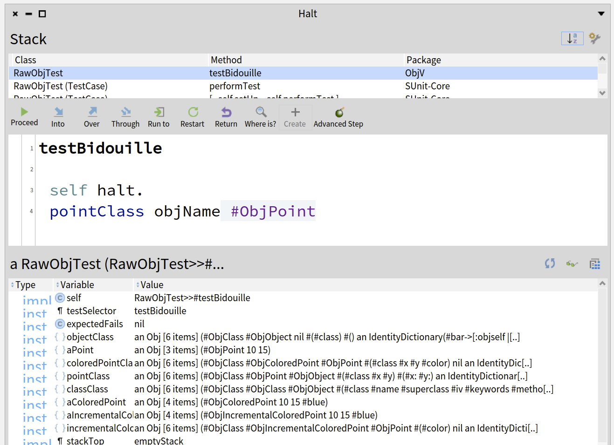

4 Getting started with the implementation
During the previous chapters, you saw the main conceptual points of the ObjVLisp model, now you will implement it. The objective of this chapter is to help you to implement step by step the model. To do so, we offer a skeleton of the implementation where key method bodies have been removed and replaced with an indication that you should implement them. In addition, a set of tests specifies the methods that are missing and that you should implement. Making the tests pass will guide you during your implementation.
4.1 Preparation
In this section, we discuss the setup that you will use, the implementation choices, and the conventions that we will follow during the rest of this book.
Getting Pharo 11
You need to download and install Pharo from http://www.pharo.org/. You need a virtual machine, and a couple image and changes. The best way is to use the PharoLauncher that is available at http://www.pharo.org/download.
You can also use http://get.pharo.org to get a script to download Pharo.
The current version of this book is working with Pharo 11.0.
wget -O- get.pharo.org/110+vm | bashYou can use the book Pharo by Example from http://www.pharo.org/PharoByExample/ for an overview of the syntax and the system.
Getting infrastructure definitions
All the necessary method or class definitions are provided as a package. It contains all the classes, the method categories, and the method signatures of the methods that you have to implement. It provides additional functionality that will make your life easy and help you to concentrate on the essence of the model. It contains also all the tests of the functionality you have to implement.
To load the code, execute the following expression:
Metacello new
baseline: 'ObjV';
repository: 'github://Ducasse/ObjVLispSkeleton/tree/master/src';
loadRunning tests
For each functionality, you will have to run some tests.
For example to run a particular test named testPrimitiveStructure,
- evaluate the expression
(ObjTest run: #testPrimitiveStructure), or - click on the icon of the method named
testPrimitiveStructure.
4.2 Naming conventions
We use the following conventions: we name as primitives all the Pharo methods that are used to build ObjVLisp. These primitives are mainly implemented as methods of the class Obj. Note that in a Lisp implementation, such primitives would be just lambda expressions, in a C implementation such primitives would be represented by C functions.
We also talk about objInstances, objObjects, and objClasses to refer to specific instances, objects, or classes defined in ObjVLisp.
To help you to distinguish between classes in the implementation language (Pharo) and the ObjVLisp model, we prefix all the ObjVLisp classes by Obj. Finally, some of the crucial and confusing primitives (mainly the class structure ones) are all prefixed by obj.
For example, the primitive that given an objInstance returns its class identifier is named objClassId.
4.3 Helping develop the kernel
To help you implement step by step the kernel of ObjVLisp, we defined tests that you will be able to execute one by one for each new aspect of ObjVLisp that you will define.
The problem is that to run a test, the kernel should be fully finished and we are defining it step by step. So we are trapped.
Now to make sure that you can execute tests as soon as you define a method, we implemented manually some mocks of the objects that represent instances and classes in the ObjVLisp world: we basically created arrays and stuffed them with the correct information to mimick what the kernel once created will do.
If you look at the methods setUp of the test classes you will see how we created them. Now pay attention because the setups are often taking shortcuts, so do not copy them blindly.
Finally, if you want to interact with objects during your development, for example to check manually that a pharo method is working or to explore your objClasses you can simply define a test method and put a breakpoint using self halt.
When you execute this test, it will open a debugger and you will be able to execute code. For example the class RawObjectTest has several instances holding objects representing: the objClass Object, an objInstance of the objClass Point, the objClass Point.... Check the instance variables of the class RawObjectTest.
Figure 4.1 shows a method named testBidouille with a halt. It also shows that we can interact and send messages to the objects that were manually created. Here we executed the primitive objName on the objClass pointClass and it returned #ObjPoint.

4.4 Inheriting from class Array
We do not want to implement a scanner, a parser, and a compiler for ObjVLisp but concentrate on the essence of the language. That's why we chose to use as much as possible the implementation language, here Pharo.
In our implementation, every object in the ObjVLisp world is an instance of the class Obj.
The class Obj is a subclass of Array.
Since the Pharo class Obj is a subclass of the Pharo class Array, the following array #(#ObjPoint 10 15) represents an objInstance of the objClass ObjPoint.
From an implementation point of view, this objClass ObjPoint is just an instance of the Pharo class Obj.
As we will see:
#(#ObjPoint 10 15)represents an objPoint (10,15). It is an objInstance of the objClassObjPoint.#(#ObjClass #ObjPoint #ObjObject #(class x y) #(:x :y) nil )is the array that represents the objClassObjPoint.
4.5 Facilitating objClass class access
In the previous chapter, we wrote some expressions using some objClass such as ObjPoint objIVs that returns the instance variables of the objClass ObjPoint.
If you simply execute this expression in Pharo you will get an error.
Indeed, the objClass ObjPoint is not a Pharo class and it is not known to Pharo: It is not added to the Pharo namespace and this is normal because it is another world.
The question is then how can we provide simple access to objClasses once they are created.
For this, we need a way to store and access ObjVLisp classes.
As a solution, on the class level of the Pharo class Obj, we defined a dictionary holding the defined classes.
The keys of this dictionary are the objClass names and the values are the objClasses with the corresponding name.
This dictionary acts as the namespace for our language. We defined the following methods to store and access defined classes.
declareClass: anObjClassstores the objInstanceanObjClassgiven as an argument in the class repository (here a dictionary whose keys are the class names and values the ObjVLisp classes themselves).giveClassNamed: aSymbolreturns the ObjVLisp class namedaSymbolif it exists. The class should have been declared previously.
With such methods, we can write code like the following:
Here we get access to the objClass ObjPoint.
Obj giveClassNamed: #ObjPoint
>>> #(#ObjClass 'ObjPoint' #ObjObject #(class x y) #(:x :y) ... )Then we can access some of its state. For example we access the instance variables of the class as follows:
(Obj giveClassNamed: #ObjPoint) objIVs
>>> #(class x y)To make class access less heavy, we also implemented a shortcut:
We trap messages not understood sent to Obj and look into the defined class dictionary.
Since ObjPoint is an unknown message, this same code is then written as:
Obj ObjPoint
>>> #(#ObjClass 'ObjPoint' #ObjObject #(class x y) #(:x :y) ... )Now you are ready to start.